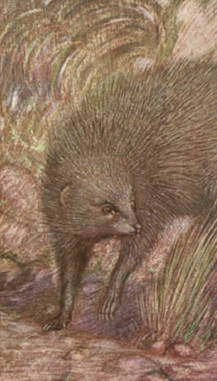
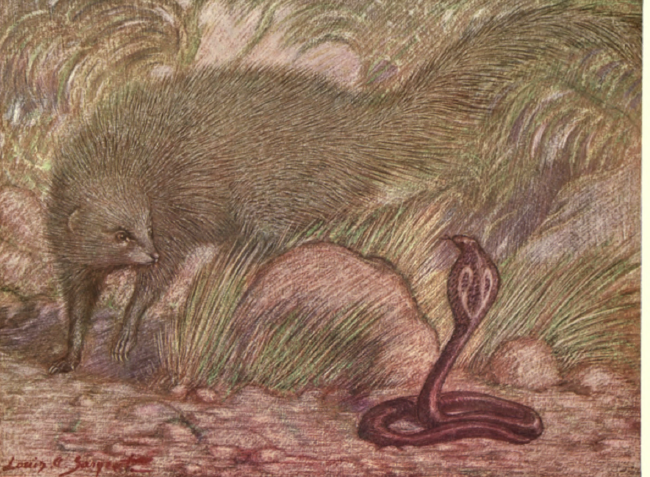
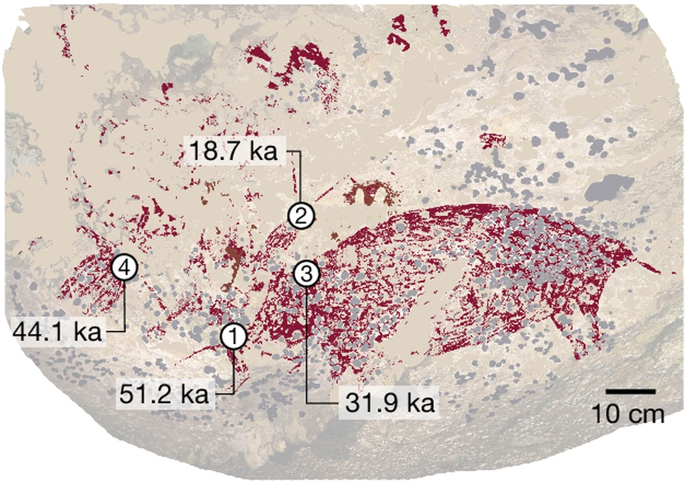
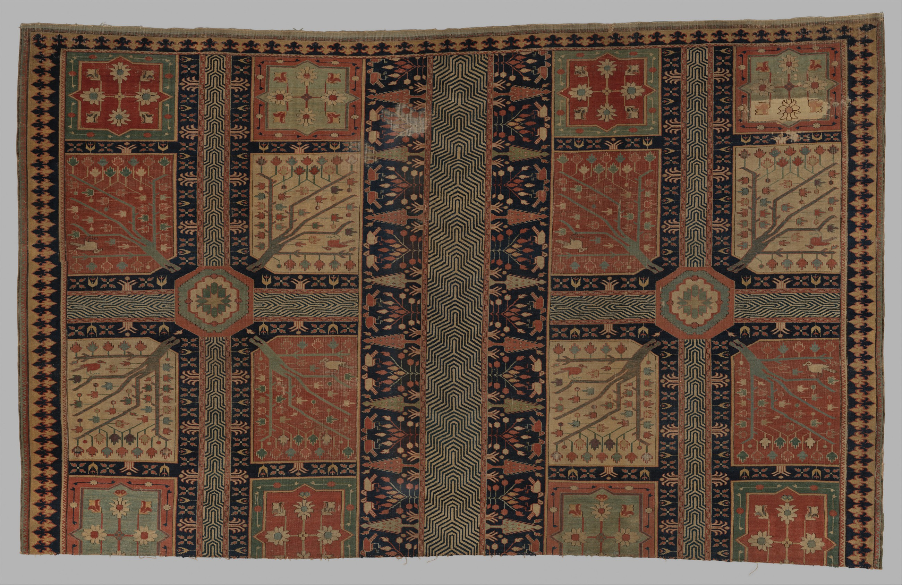
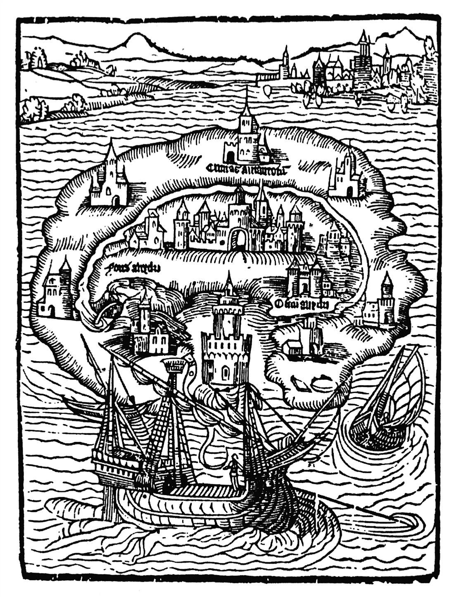

Grimms’ folktale · The spinning room
Rumpelstiltskin


The wheel is still. The daughter has turned in her chair. A stranger holds a lantern low in the doorway. By morning the king expects every bundle of straw at her feet to be gold. From that chair, what might an open door promise?
What does the gold cost her?
First her necklace, then her ring. On the third night she has nothing left to offer. The little man asks for her first child if she becomes queen. The king gets his gold each morning without ever having to hear the bargain.
Later, learning the little man’s name lets the queen keep her child. Look back at the open door. What kind of rescue did it seem to promise the first time?
Panchatantra · The doorway
The Brahmin’s Wife and the Mongoose

The mongoose has its head down and its front paws planted apart. In the tale it runs to meet the woman as she returns with her water jar. There is blood on its mouth. She can see the animal from the doorway. She cannot see her baby. What do you think she fears?
See the rest of the plate

She brings the heavy water jar down on the mongoose and kills it. Only then does she go inside. Her child is asleep. The snake lies dead beside the cradle. The blood she saw was real. What did she supply from her own fear?
Public-domain plate and crop source · Read the Panchatantra tale

Ursula K. Le Guin · 1973
The price of happiness

Follow the joined hands near the front of the dance. At the right, people have found seats at a table. This Flemish village gives us a crowd to look through as we enter Le Guin’s imagined city. If you joined the gathering, who would you sit beside?
Oil on canvas. The Metropolitan Museum of Art, Open Access (CC0). Painting record · Le Guin’s story.
What makes this happiness possible?
The city’s happiness depends on one child kept alone in misery. Some citizens walk away. The child stays.

The platform juts out into the light. Look how small a prisoner becomes beside that arch. Piranesi imagined a vast prison. Le Guin gives the child a single cramped room and tells us that the people outside know it is there. Go back to the dance. Where does your eye land now?
Etching from Imaginary Prisons. The Metropolitan Museum of Art, Open Access (CC0). Print record · Le Guin’s story.
Epilogue · Becky Chambers · 2021
A future after refusal

A low bench sits at the edge of the road. Hiroshige gives the traveler somewhere to stop for tea. In Becky Chambers’s novel, a tea monk and a robot can meet because the robots of Panga once chose to put down their tools and leave. After Omelas, what does it mean to be free to stop?
Japanese woodblock print. The Metropolitan Museum of Art, Open Access (CC0). Print record · Chambers’s novel and excerpt.
Who gets to decide whether this world is good?
Sulawesi, Indonesia · At least 51,200 years ago
Before writing

A pig takes shape in the red pigment. Mineral laid down over the painting helped researchers establish its minimum age. The tracing shows which other marks they read as figures.
Adapted from figure 3 in Oktaviana et al. (2024), cropped for display. CC BY 4.0. Read the dating study and examine its figures.
Compare the research tracing

We can recognize a story. What its makers imagined as paradise remains unknown.
Nippur, Mesopotamia · Tablet dated 1900–1600 BCE
When the wolf lets the lamb graze

Follow a row of wedges across the clay. These marks preserve a poem about Dilmun, where a wolf leaves the lambs in peace. Even this land needs fresh water. When water rises from the ground, its fields at last yield grain.
Ancient scribe unidentified. Penn Museum, CBS4561. Obverse photograph, cropped from plate V in Stephen Langdon’s 1915 publication; public domain. Photographic plate · Tablet record · Read the poem.
Egypt · Greece · India
The good life
Would your perfect world still have work in it?

Stalks of grain reach up beside Sennedjem and Iineferti. The tomb wall places the couple together in fields where they still sow and harvest after death.
Charles K. Wilkinson after the painted tomb wall at Deir el-Medina. The Metropolitan Museum of Art, object 30.4.2. Public domain, The Met Open Access (CC0).

A child blows bubbles while fruit is gathered nearby. Bloemaert drew this scene more than two thousand years after Hesiod described a generation fed by the earth’s abundance. Beside Sennedjem’s tall grain, which hands are free to play?
Ink, gouache, and chalk on paper. Städel Museum, Frankfurt am Main, inv. 2878 Z. Public domain. Drawing record · Hesiod, Works and Days.
Eastern Mediterranean · First century CE
A promise of paradise

Three crosses rise above the crowd. Luke draws us close enough to hear one of the condemned men ask Jesus to remember him. Jesus promises that the two will be together in paradise. Which figures would you have paused over without that exchange?
Netherlandish engraving. The Metropolitan Museum of Art, Open Access (CC0). Print record · Luke 23:39–43.

An angel gestures toward a city crowded with towers. In Revelation, the holy city descends and God comes to dwell among people. Beside the three crosses in Galle’s print, Duvet gives the visitor a different scale for imagining that promise.
French engraving, undated in the Met catalogue. The Metropolitan Museum of Art, Open Access (CC0). Print record · Revelation 21.
China · Early fifth-century story · Handscroll painted in 1638
A village beyond the stream

A stream winds between the mountains. Follow it from the right with Tao Qian’s fisherman to a village sheltered from generations of upheaval. When he tries to come back, he cannot find the way.
Zhang Hong, ink and color on paper. The Metropolitan Museum of Art. Public domain. Detail views use the same work.
Arabia · Seventh-century text · Eighteenth-century textile
A garden underfoot

A canal runs between rows of trees woven into the carpet. The makers laid the garden out as you might see it from above. In Qur’an 47:15, the promised garden has rivers of water, milk, wine, and honey.
The Metropolitan Museum of Art, object from the Theodore M. Davis Collection. Public domain, The Met Open Access (CC0). Read Qur’an 47:15.
Siena, 1445 · Louvain, 1516
A garden and an island

Arms reach across the flower beds. Once set at the foot of a Sienese altarpiece, this small panel brings visitors close enough to see paradise one reunion at a time.
Giovanni di Paolo, tempera and gold. The Metropolitan Museum of Art, object 06.1046. Public domain, The Met Open Access (CC0).

Ships sit off the coast of More’s island. The map appeared opposite an invented alphabet in the first edition of Utopia. From this height you can make out the settlements. What can you tell about a person who lives in one?
Anonymous woodcut, first edition. Public-domain facsimile via The Open Utopia. Georgetown’s first-edition exhibition.
Where would you look for happiness in each picture?
South Asia · Published in Madras, 1905
A kitchen powered by sunlight

Mirrors tilt inward around a cooking vessel. William Adams described testing this apparatus in Bombay in 1878. In Rokeya Sakhawat Hossain’s 1905 story, Sister Sara shows Sultana a kitchen supplied by a pipe carrying solar heat. The engraving lets us compare a working invention with the different machine Rokeya imagined.
Unsigned engraving accompanying W. Adams’s “Cooking by Solar Heat.” Public domain; cropped from the original journal page. Original engraving · Ladyland’s kitchen in Sultana’s Dream.